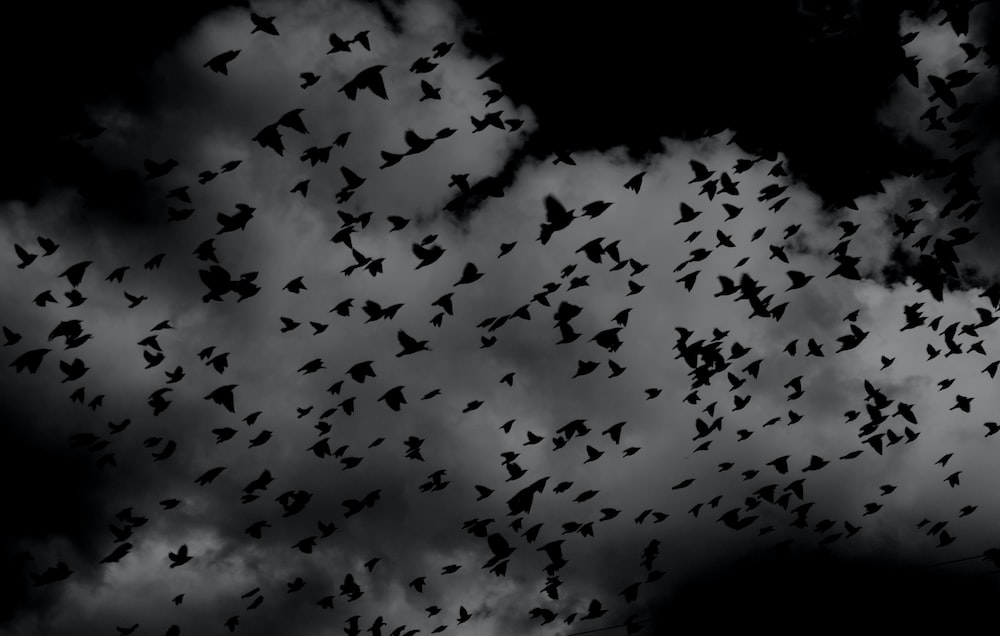
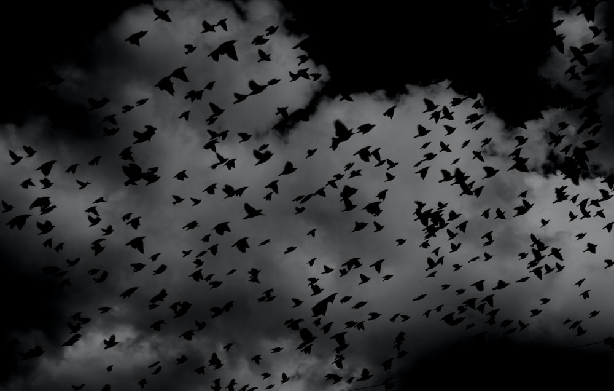

назад
назад
 

проект "Фантастистические сны"
Минутная анимация о загадочных снах, брождениях по лесу и встречу с причудливыми животными.
- Эта анимация о снах
- Данна покадровая анимация выполнена на основе собственного опыта
- Мультфильм выполнен в ч\б эстетике, так как мы знаем, что цвета в основном не имеют цвета
- Анимация не наполнена каким-то очень глубоким смыслом и обилием каких-то метафор, так как искусство должно быть понятным...